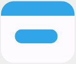

<nav navbar>
  <h1 title>{{ titleService.getTitle() }}</h1>

  <div itens-nav>
    <div app-tooltip-helper>
      <mat-icon
        class="icon-help"
        matTooltip="Selecione uma fatura para visualizar e gerenciar as despesas associadas a ela. Cada fatura representa um conjunto específico de despesas."
        >help_outline
      </mat-icon>
    </div>
    <div app-input-color selected-group [formGroup]="grupoFaturasForm">
      <div class="select-grupo-fatura">
        <mat-form-field appearance="outline">
          <mat-select
            panelClass="grupo-fatura-select-panel"
            formControlName="grupoFaturaId"
          >
            <mat-option
              *ngFor="let grupoFatura of grupoFaturas"
              [value]="grupoFatura.id"
            >
              {{ grupoFatura.nome }}
            </mat-option>
          </mat-select>
        </mat-form-field>
      </div>

      <div class="select-ano">
        <mat-form-field appearance="outline">
          <span matPrefix class="text-color">Ano</span>
          <mat-select panelClass="ano-select-panel" formControlName="ano">
            <mat-option *ngFor="let ano of anos" [value]="ano">
              {{ ano }}
            </mat-option>
          </mat-select>
        </mat-form-field>
      </div>
    </div>

    <div opcoes>
      <i>
        <a class="icon-temas" [matMenuTriggerFor]="themeMenu">
          <mat-icon>format_color_fill</mat-icon>
        </a>
      </i>

      <i logout-icon (click)="logout()">
        <mat-icon>logout</mat-icon>
      </i>
    </div>

    <mat-menu #themeMenu="matMenu">
      <mat-radio-group
        mat-radio-custom
        [(ngModel)]="selectedTheme"
        (change)="onThemeChange($event)"
      >
        <mat-radio-button class="roxo" value="roxo-theme">
          <div descricao-tema>
            <span>Branco e Roxo</span>
            <span class="theme-icon">
              
            </span>
          </div>
        </mat-radio-button>

        <mat-radio-button class="azul" value="azul-theme">
          <div descricao-tema>
            <span> Branco e Azul</span>
            <span class="theme-icon">
              
            </span>
          </div>
        </mat-radio-button>

        <mat-radio-button class="black" value="dark-theme">
          <div descricao-tema>
            <span>Tema Escuro</span>
            <span class="theme-icon">
              
            </span>
          </div>
        </mat-radio-button>
      </mat-radio-group>
    </mat-menu>
  </div>
</nav>
